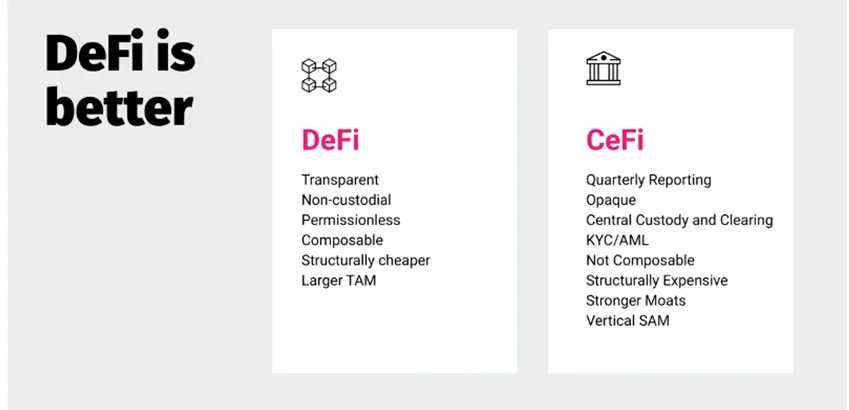
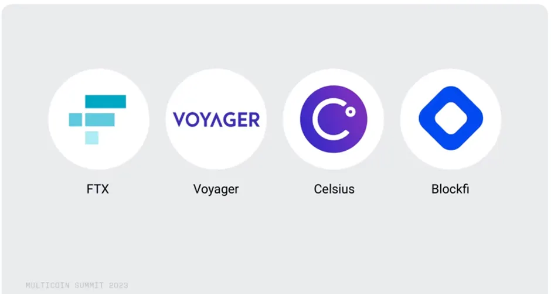
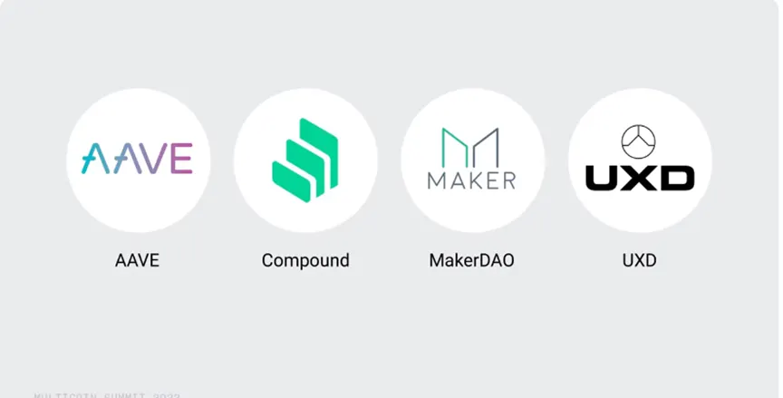
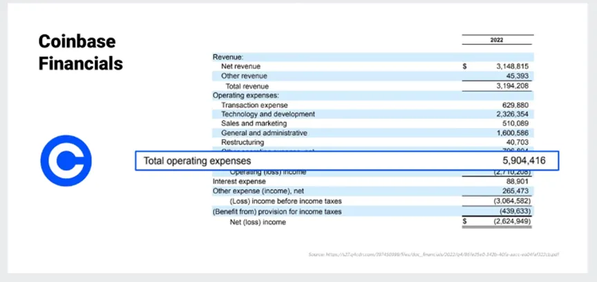
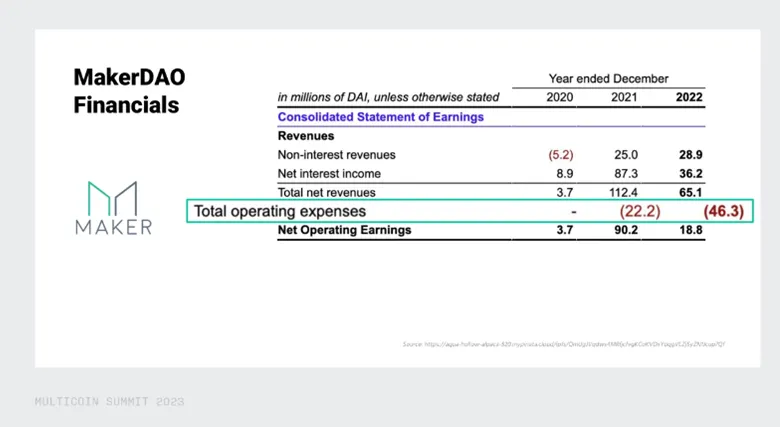
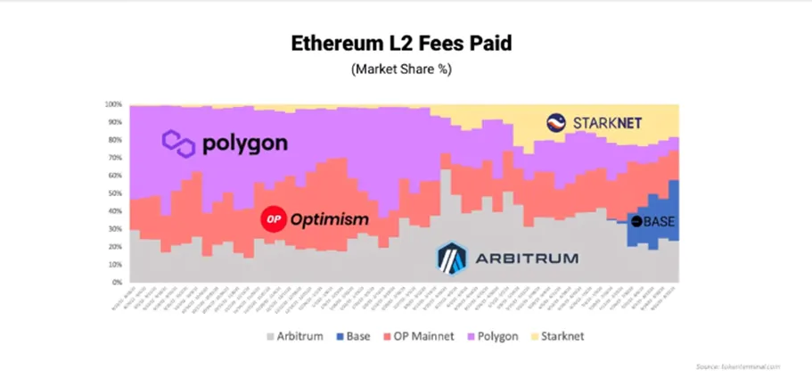
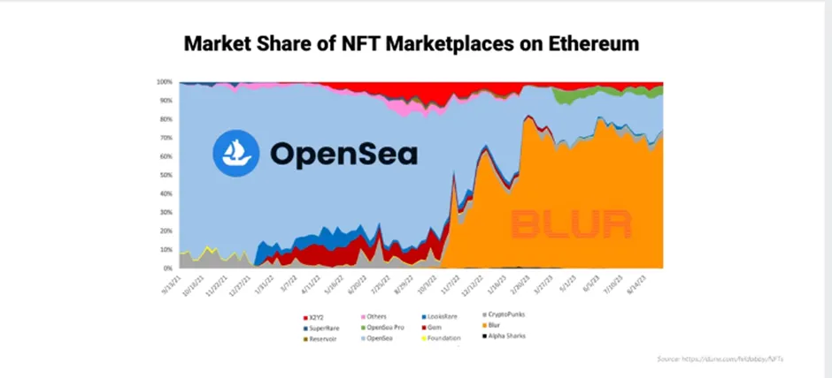
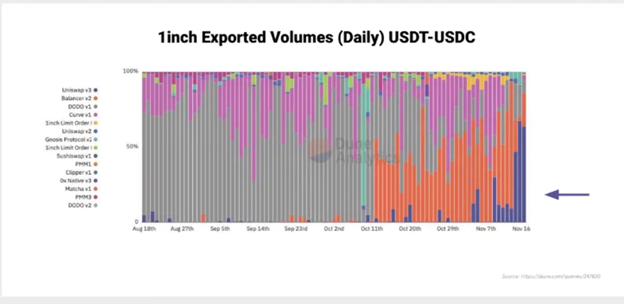
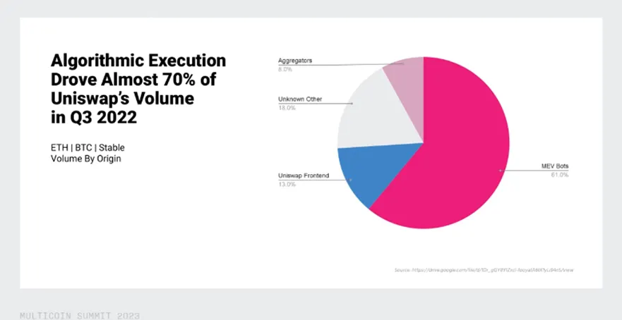

The new approach to Finance — Decentralised Finance (“DeFi”) — built within the Crypto ecosystem is relatively new and still very small in size, especially when compared to the huge, centralised businesses found in traditional finance. In much of our writing, we have tried to explain how DeFi is likely to grow and take share away from established players given it has a number of inherent advantages relative to the traditional Centralised Finance (differences summarised in the graphic above). But we at Dragonfly are Crypto investors, looking to identify the most attractive investments within the Crypto ecosystem. In that regard, today I would like to explain the challenges of DeFi from an investment standpoint.

DeFi projects both on the lending and derivative side such as a Compound, Maker and others held up exceptionally well during the 2022 market turbulence. They faced the same stress test that the rest of the market faced last year, and all things considered, they actually operated fairly smoothly. One important factor is that because we have real-time insights into on-chain data, we can see that all of these protocols both remained solvent and liquidated any users who were approaching negative equity in good time.
Therefore, now with more proof than ever, as we think about DeFi versus CeFi, our general conclusion is that DeFi is better in every aspect. This is largely due to DeFi’s transparency: any user can review the solvency of a protocol that she’s using on a real-time basis and adjust her positions accordingly. In addition, DeFi is non-custodial meaning that all users control the private keys to the funds the entire time, thereby eliminating counterparty risk. DeFi is permissionless so anyone anywhere in the world can participate which we think is market expansionary. It’s also composable meaning that any application developer can seamlessly integrate two DeFi applications with one another and lastly, we think that DeFi should structurally be cheaper than CeFi because there’s very little overhead associated with running a DeFi project. Overall, its clear that DeFi products have a larger market opportunity coming from a low base. So in investment terms, they definitely tick the growth opportunity “box”!

Having listed all of DeFi’s obvious advantages and recent superior performance during the downturn, today I would like to discuss the disadvantages of DeFi as it now stands from an investor’s perspective. We at Dragonfly hold that the most attractive protocols to invest in for the long term are not only high growth ones but those that have some identifiable “economic moats” (protecting them from new competition) to help sustain their competitive advantage and thereby offer their investors more years of compounded growth.
One acute challenge that we’ve recognised when looking at making investments in DeFi is that CeFi products have stronger “structural moats”: these include stringent licensing requirements, big customer support teams, expensive servers and custody systems, high performance matching engines, human-based risk management and more. All of these require significant upfront capital that a lot of startups are just not able to afford even in CeFi land. So a large CeFi player is more likely to sustain their market position relative over a longer period of time. This is not the same in Defi. To give you helpful context: in Coinbase’s financial statements you can see they spent just shy of $6 billion in operating expenses in 2022, while Maker — one of the leading Defi protocols — spent only $46m!


For any DeFi protocol one question that we think investors need to obsess over is how DeFi tokens can not only capture value but also sustain lasting value. The nature of capital and users in DeFi systems largely means that aggregators ensure that capital is routed efficiently across all of the various Defi protocols. In addition, we believe that if a user is sophisticated enough to onboard into DeFi as it stands today (with all of its clunky UX), she’ll likely be able to search for best execution if she’s a trader, or best yield if she’s a lender, and lowest borrowing cost if she’s a borrower etc.
A few examples of the fluidity of capital on-chain below. The first example is capital rotations across chains on just a one-year time horizon. We can see that Polygon was dominant just 12 months ago but, in that time, Base and Starknet have both started eating into its market share in pretty quick succession. (NB We use fees paid in this chart because we find that to be one of the best metrics of real demand across all of the various blockchain ecosystems).

The second example is capital rotation across NFT marketplaces. In 2021 Opensea was the dominant venue for secondary NFT trading. However, a new marketplace called Blur came along and completely usurped them by offering zero fees and catering to large traders. They went so far as to offer NFT creators full royalties for blocking Opensea from listing their assets.

Our last example is capital rotation across DeFi protocols themselves. Uniswap versions 1 and 2 had only one fee tier which was 30 basis points. Later for V3 they introduced the idea of variable fee tier pools. From that, a one basis point fee pool was created for the usdc/usdt pair. From that one fee change alone, Uniswap went from 10% market share of 1inch aggregator volume (which is the largest aggregator for usdc/usdt) up to 65% market share in just a matter of days!

I think these examples show how fast capital flows can respond to prices on-chain. One really interesting study, undertaken by one of the Uniswap Foundation grantees, concluded that only 33% of Uniswap’s volume in Q3 of 2022 originated from the Uniswap front end whereas almost 70% came from either aggregators or Bots. All of that volume is inherently algorithmic and just looking for best execution.

The result of this is that none of those traders or that volume has any brand loyalty to Uniswap whatsoever. Rather, they’ll simply go wherever the best price is. The image above makes the point that even for the largest brands in DeFi (one example is Uniswap), only a small fraction of their users are actually owned by the Uniswap front end.
At the moment we can conclude that brand loyalty in DeFi is a myth and best execution is king because capital is so fluid in DeFi. In order to retain users, protocols therefore are currently relying on other ways to retain value and users. It is our experience that protocols which are extremely well capitalised and offer the liquidity advantages of relatively large TVL, are faring better at attracting and importantly keeping lenders and borrowers as both user groups value the security that depth of liquidity an established platform offers. This liquidity advantage creates a powerful flywheel in which the largest platform with the token that’s the most liquid (and which often has the highest market cap) is able to attract new users because it’s perceived to be the safest. These new users bring further capital, revenue, TVL etc., which — all things being equal — increases the platform’s native token price, further reinforcing that flywheel.
The interesting takeaway from the above is that although brand loyalty per se doesn’t seem to be an important factor in DeFi today, the ‘normal’ way users flock to established and ‘trusted’ platforms is acting as a competitive advantage just like we would see in the TradFi world. So DeFi isn’t as different from an investing perspective as it at first seems.
My other observation is that, going forwards, I fully expect some big brands to emerge in DeFi in the same way that we have seen in CeFi. In order to onboard new (less sophisticated) users, I believe that DeFi platforms are very much incentivised to improve their user experience. In the same way as in CeFi, users will stick with (and show brand loyalty to) DeFi platforms that get this right. Therefore, I believe that brand loyalty — driven by much needed improvement in UI, with the aim of making user experience more intuitive — will emerge in DeFi too as an important moat as the sector grows and matures.
PTLIB is CIO OF Dragonfly Asset Management.
DISCLAIMER: This content is for EDUCATIONAL AND ENTERTAINMENT PURPOSES ONLY and nothing contained in this blog should be construed as investment advice. Any reference to an investment’s past or potential performance is not, and should not be construed as, a recommendation or as a guarantee of any specific outcome or profit.